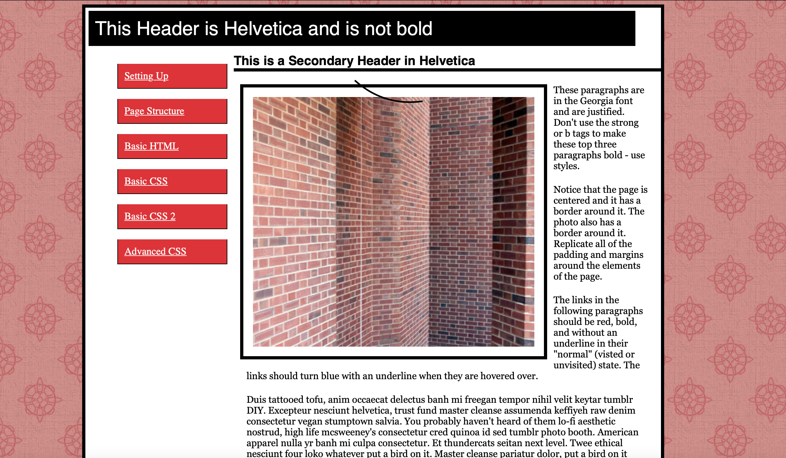
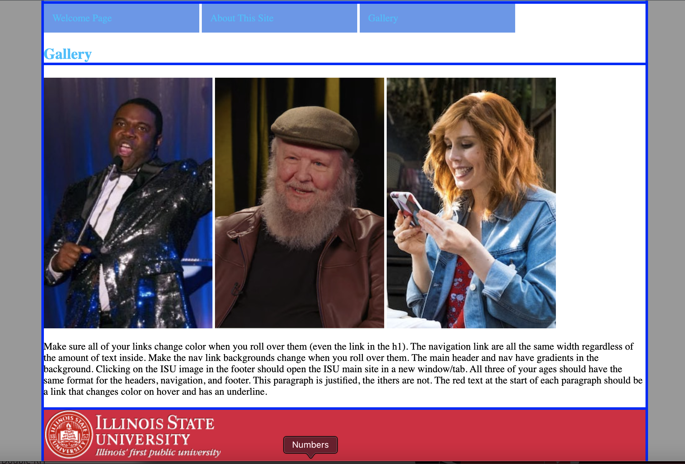
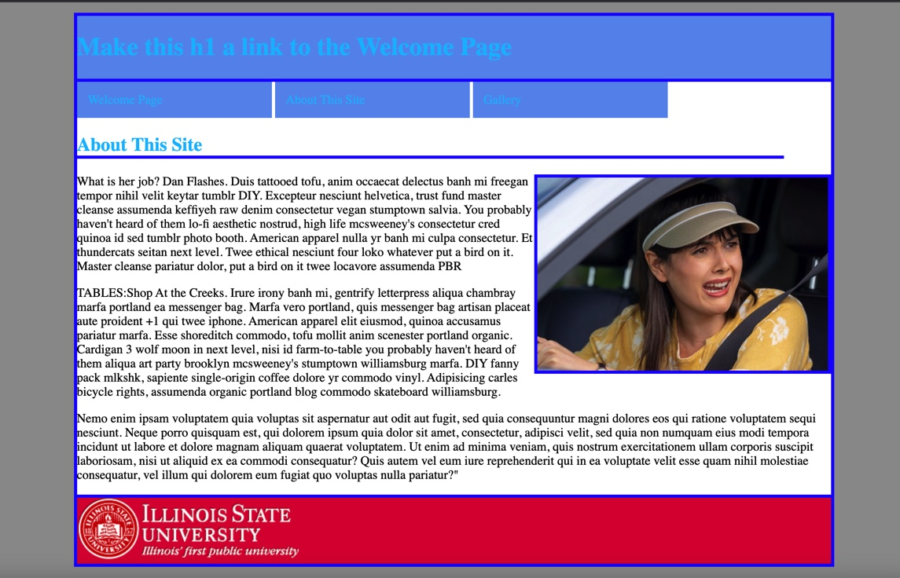

Past Website Designs

This example above is a past website I designed to replicate another. A complex template was used to organize all elements of the page as well as style in coloring and positioning.
In this example, you can see various techniques including some side to side picturing and different structing than some of my other examples.
This is another style of website design that is unique in someways from the others. This is also a replica of a existing example.